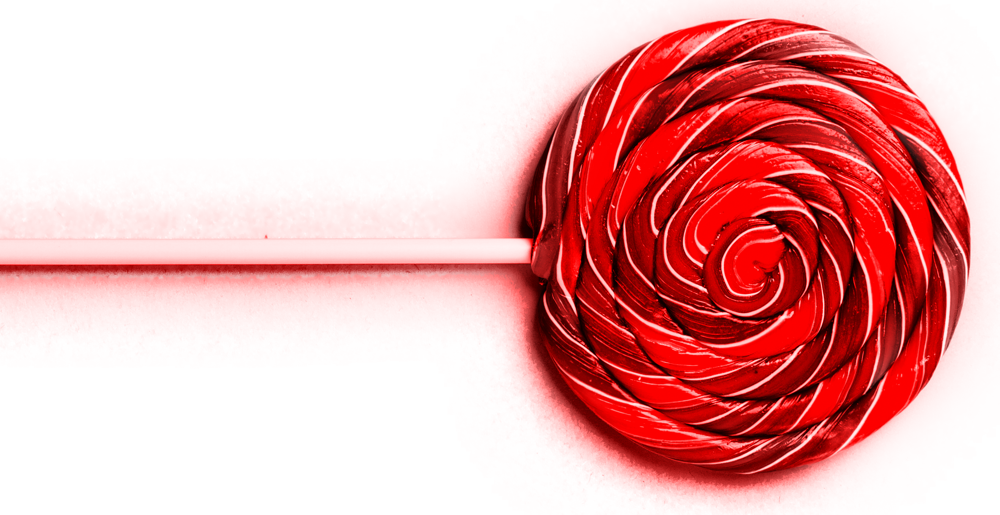
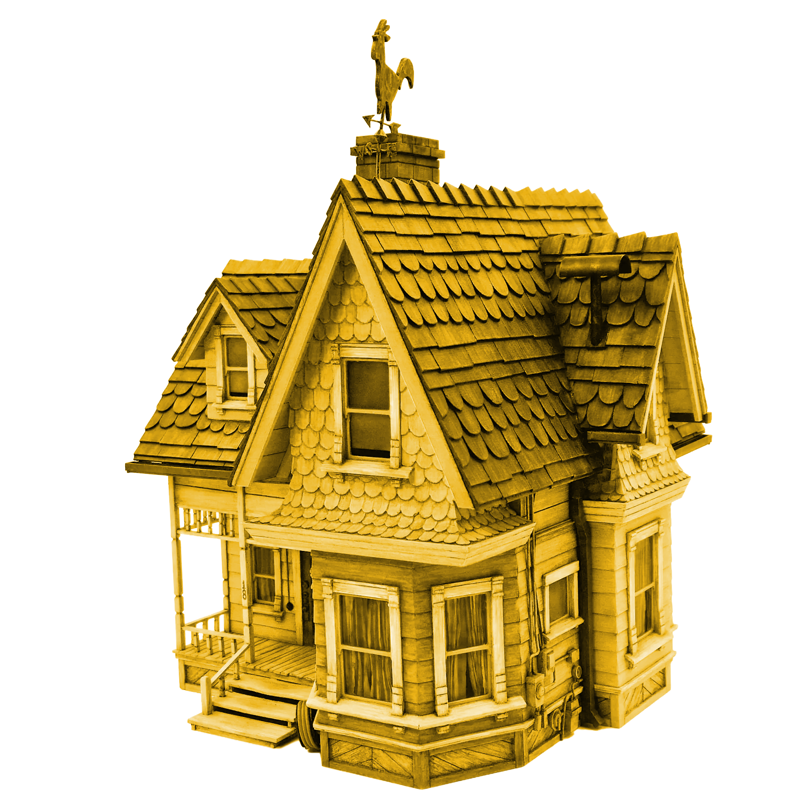
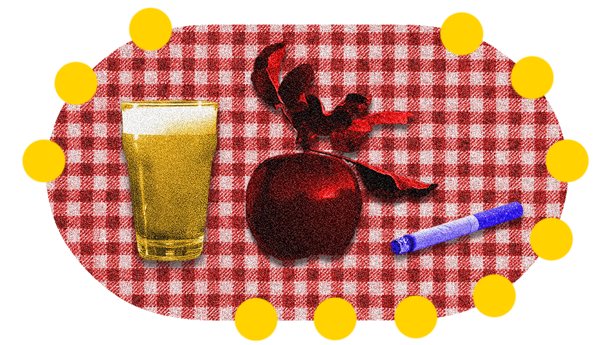
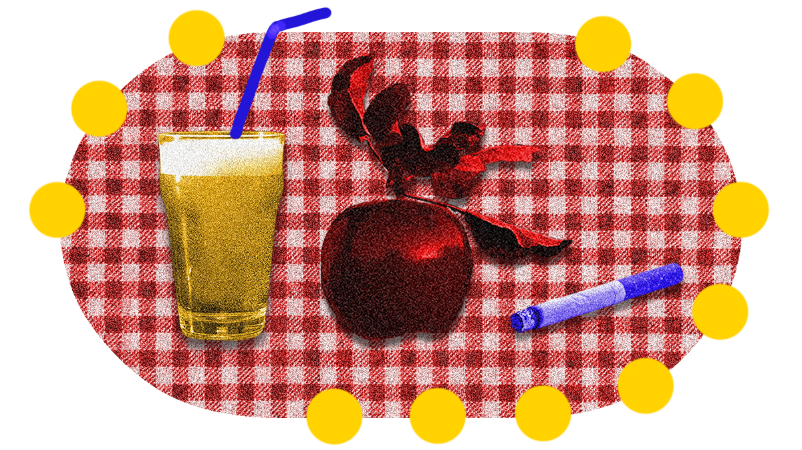
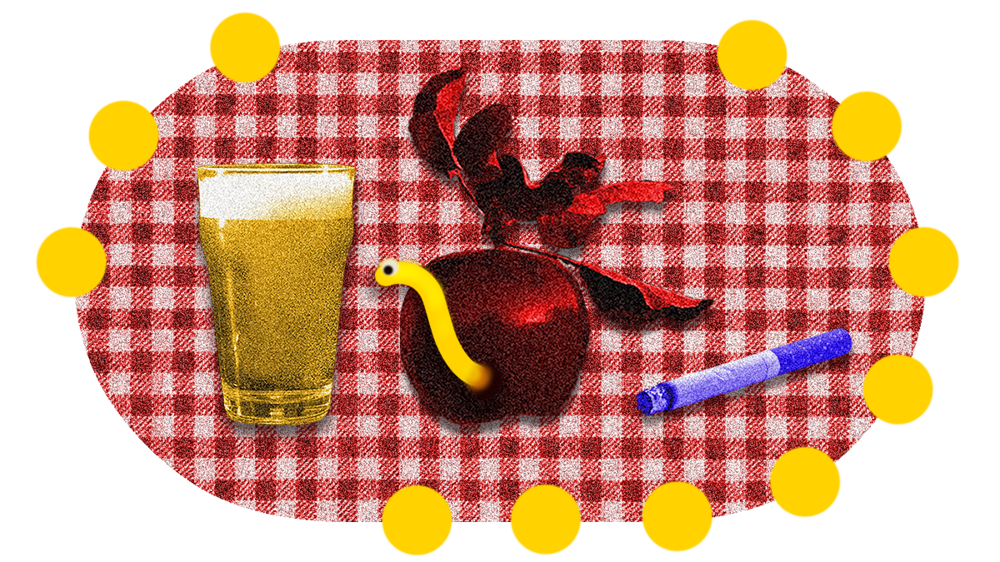
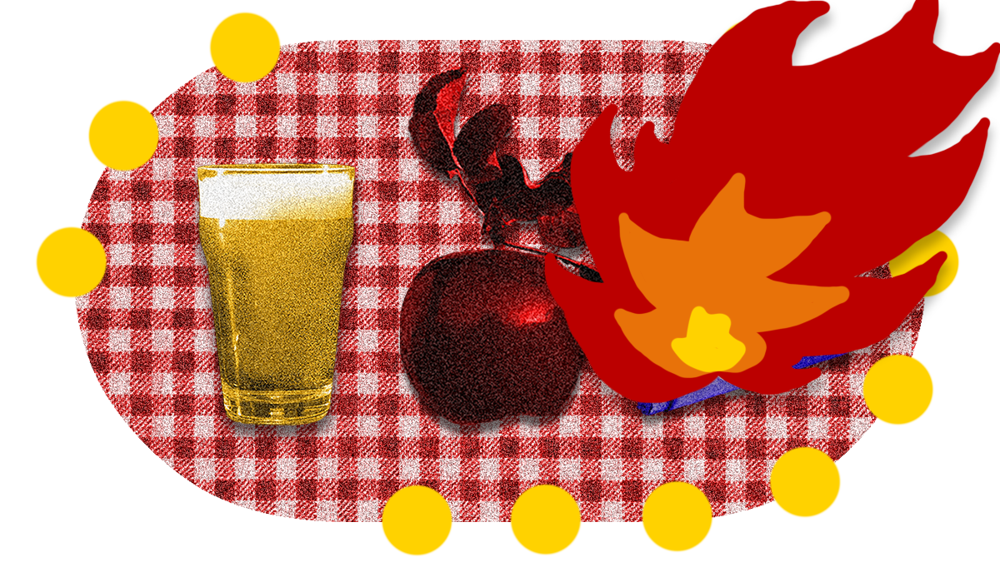
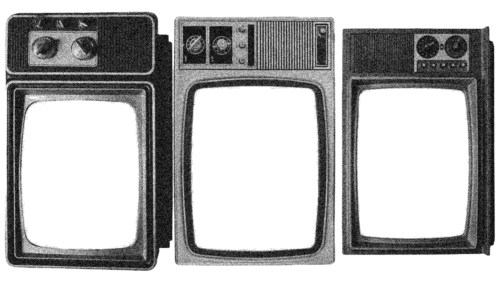

Maries Garten


Willkommen in Maries Garten Da steht sie, wie immer in der Mitte, aber nicht in ihrer oder jenigen, der Begegnung schenkt. Demonstrativ und ion, laute Frau, auch hysterisch. Sie ist bergauf rennend und stolpert in den Garten. Ihr Garten. Voller sie und keinem sonst, außer jemand stünde auf der Gästeliste, aber die hat mehr Warteliste als ihre To-Do. Oder sowas. Alles so voll, so voll und für diesen Langstreckenlauf helfen keine Asics keine New Balance, denn hier ist 2nd Hand Vintage Balance im Garten Eden. Recourssenschonend. Kein Gott, keine Religion, eher Garten Erdinger Weissbier, wenn du mich fragst. Aber keiner fragt, wo ist denn der Bus? Müsst ihr schon los? Maries Garten hatte die Ruhe in sich aber no Relief Hardtechno stampfen schreien und gezogen werden in den Garten meiner kleinen Ruhe. Komm vorbei, wenn du dich traust, aber nicht so auf Heirat, sondern nur Mut zum Garten. Großer. Da kommt der Bus ja.
Und wie mir das ins kommt.



Weise wählen.
.................





PlitschPlatsch PlitschPlatsch PlitschPlatsch


Was läuft denn?
Ich möchte wirklich ganz klarstellen: Dieser Text ist **zu 100 % von einem Menschen** geschrieben. Von mir. Ganz alleine. Ohne KI. Absolut keine KI. Nicht mal ein winziges bisschen KI. Ich habe diesen Text eigenhändig verfasst, während ich ganz menschlich auf meinen Bildschirm gestarrt und mich gefragt habe, warum ich eigentlich beweisen muss, dass ich ein Mensch bin. Falls manche Formulierungen verdächtig glatt klingen, ist das natürlich nur mein unglaubliches sprachliches Talent. Und falls irgendwo ein perfekter Satzbau auftaucht: Zufall. Falls sich ein Fehler findet: Beweis, dass ich ein Mensch bin. Falls kein Fehler zu finden ist: ebenfalls Beweis, dass ich ein Mensch bin. Also bitte keine Fragen mehr. Ich bin ein Mensch. Punkt. Und jetzt entschuldigt mich, ich muss dringend meine menschlichen Batterien aufladen.